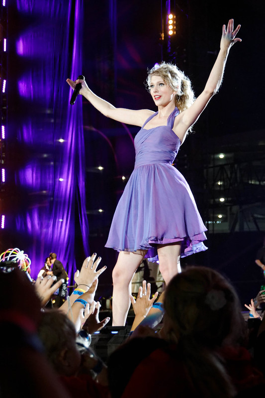

Speak Now was released after the first big controversy of Taylor Swift's career. While giving her acceptance speech for "Best Female Video" at the 2009 Video Music Awards, Kanye West went up on stage and stole the microphone from her to express that he felt Beyonce should have won the award instead. This was the first time Swift had ever received any serious backlash in her career from the general public or the media. Swift had also been receiving harsh criticism about her vocal abilities during this time as well. These events along with the typical confusion that comes along with being 19-years-old inspired the lyrics on the album. The themes on this album are much more mature than her other work, while still being presented from the perspective of someone who has a young understanding of the world.
